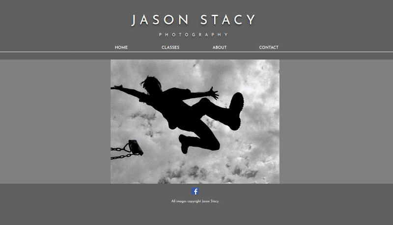
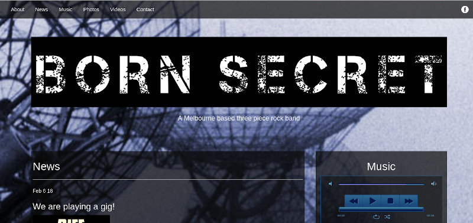
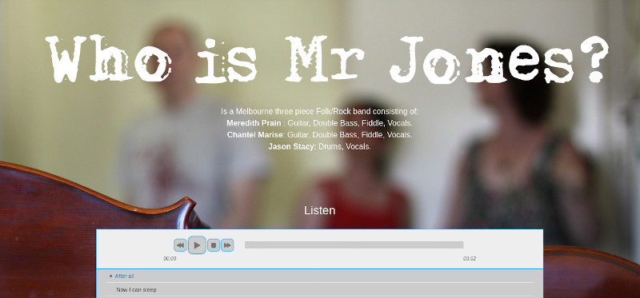

Jason Stacy Photography

I created this website to showcase my photography work. It has a professional style and I’m very happy
with the layout that I chose.
There is a slideshow on the home screen showing photos in varying different categories from nature to
portrait and art.
The site consists of 4 different pages.
The home page has the slide show of images.
The classes page has information on classes I run out of my home when I get the time and when people are
interested in taking them.
The about me page has information on my photographic background.
The contact page has all my details.
The site has some PHP to keep the different pages DRY by including the header and footer elements.
It also has some JavaScript to display the slideshow and the drop-down menus.
Born Secret

I am a drummer in a band called Born Secret and I thought it would be a good project to create a website
for them.
We are a three piece all original band but don’t manage to play very often due to everyone having young
families. We do try to get together once every few months and keep the songs fresh.
The website is basically just the one page. I included some functionality to play songs that we self
recorded as well as some video that was recorded live at a gig we did in 2018.
I made the website from scratch but there is some basic bare bones WordPress functionality there to
enable the band mates to update posts when necessary. Although they never have…
There is a photo slideshow down the bottom in JavaScript. And the website is fully responsive with a
JavaScript hamburger menu and adjusting columns.
Who is Mr Jones

I am also a drummer in a band called Who is Mr Jones?
This is a three piece consisting of my wife Chantel, Merry (a close friend) and myself. We are a
folk/rock band and much like Born Secret do not play very often. In fact it seems these days we are
permanently on hiatus.
The site is again just a one page site that I created from scratch but with bare bones WordPress
functionality built in to update using posts easily.
There is a complete collection of the recorded songs on the site with links to purchase the music from
various different online vendors.
I have included a slideshow of photos at the bottom with JavaScript too.